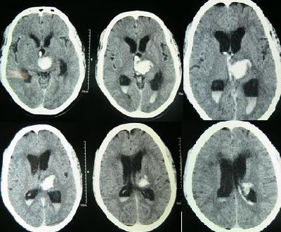

Ficha del catálogo
Hemorragia intracerebral
- Sistema
- Nervioso
- Modalidad
- TC
- Región
- Cráneo
- Dificultad
- Intermedio
Sangrado dentro del parénquima cerebral, causa de aproximadamente el 15% de los ictus pero responsable de una mortalidad mucho mayor que la del ictus isquémico. La tomografía simple la detecta de inmediato, lo que la convierte en el primer estudio a realizar.
Técnica
Tomografía de cráneo sin contraste. El estudio con contraste o la angiotomografía se añaden cuando se busca una malformación vascular o un aneurisma como causa.
Qué observar
- Colección hiperdensa (blanca) de bordes definidos dentro del parénquima cerebral
- Localización, que orienta a la causa: Los ganglios basales y el tálamo son típicos de la hemorragia hipertensiva, mientras la localización lobar sugiere angiopatía amiloide en pacientes mayores
- Volumen del hematoma, factor pronóstico determinante
- Edema perilesional como halo hipodenso alrededor del sangrado
- Efecto de masa: Borramiento de surcos, compresión ventricular y desviación de la línea media
- Extensión intraventricular de la sangre, que empeora el pronóstico y puede causar hidrocefalia
Hallazgos
Colección hiperdensa intraparenquimatosa con edema perilesional y efecto de masa sobre las estructuras vecinas.
Perlas
La sangre cambia de densidad con el tiempo: Es hiperdensa en la fase aguda, se vuelve isodensa con el parénquima entre la primera y la tercera semana, y termina siendo hipodensa. Un hematoma subdural subagudo isodenso es especialmente traicionero, y hay que buscarlo por signos indirectos como el borramiento de los surcos de un lado.
Diagnóstico diferencial
- Infarto con transformación hemorrágica
- La sangre aparece dentro de un área hipodensa que sigue un territorio vascular y suele ser petequial o heterogénea, en lugar de formar un hematoma homogéneo y redondeado.
- Hemorragia por malformación vascular
- Se sospecha en pacientes jóvenes y sin hipertensión, con localización atípica y presencia de vasos anómalos o calcificaciones, y se confirma con angiotomografía o angiografía.
- Tumor con sangrado intralesional
- El hematoma es heterogéneo, con edema desproporcionado y con realce nodular tras el contraste, y persiste una masa en los controles evolutivos.
- Angiopatía amiloide cerebral
- Produce hematomas de localización lobar en pacientes mayores, con frecuencia recurrentes y con microsangrados corticales que la resonancia detecta.
- Hemorragia subaracnoidea aneurismática
- La sangre se distribuye por las cisternas de la base y los surcos siguiendo su forma, y no como una colección intraparenquimatosa.
- Trombosis venosa cerebral
- El sangrado aparece en localizaciones que no corresponden a un territorio arterial, con edema desproporcionado y con signos de trombo en los senos venosos.
Simuladores
- Las calcificaciones fisiológicas de los ganglios basales, del plexo coroideo y de la pineal son densas y simétricas y no deben interpretarse como sangrado.
- Un estudio con contraste reciente deja restos hiperdensos por extravasación en el parénquima que se confunden con sangre (la comparación con el estudio sin contraste o el control evolutivo lo aclara).
- El artefacto de endurecimiento del haz junto a la base craneal crea zonas densas en la fosa posterior.
- En pacientes con anemia grave la sangre aguda puede ser menos densa de lo esperado y pasar más desapercibida.
Por modalidad
- TC
- Estudio de elección inicial por su rapidez y su sensibilidad para la sangre aguda; permite medir el volumen y detectar la extensión intraventricular.
- RM
- Caracteriza mejor la causa subyacente, detecta microsangrados y lesiones tumorales o vasculares, y permite datar la hemorragia por la evolución de la señal.
- US
- Aplicable en el lactante con fontanela abierta y como Doppler transcraneal para monitorizar el vasoespasmo.
- RX
- Sin papel diagnóstico en la hemorragia intracerebral.
Protocolo
Tomografía de cráneo sin contraste con cortes axiales desde el foramen magno hasta el vértex, revisados en ventanas cerebral y ósea. Se mide el volumen del hematoma con métodos sencillos basados en sus tres diámetros y se valora la extensión a los ventrículos y el desplazamiento de la línea media. Cuando se sospecha una causa vascular subyacente se añade angiotomografía en fase arterial, que además puede mostrar signos de sangrado activo dentro del hematoma, dato asociado a crecimiento y a peor pronóstico. En pacientes jóvenes, con localización atípica o sin factores de riesgo se completa el estudio con resonancia y, si procede, con angiografía.
Clasificación
El volumen del hematoma se estima con la fórmula que multiplica sus tres diámetros perpendiculares y divide el resultado entre dos, método rápido y de uso extendido en la urgencia. Para la hemorragia intraventricular se aplica la escala de Graeb, que puntúa la ocupación de cada ventrículo y el grado de dilatación. La escala ICH combina la edad, la puntuación de Glasgow, el volumen del hematoma, su localización infratentorial o no y la extensión intraventricular para estimar la mortalidad. En la hemorragia subaracnoidea se emplean las escalas de Fisher y de Hunt y Hess.
Errores frecuentes
- No medir el volumen ni valorar la extensión intraventricular, que son los datos pronósticos más relevantes del informe.
- Asumir causa hipertensiva en un hematoma lobar de un paciente joven sin buscar una malformación vascular o un tumor subyacente.
- Ignorar la evolución de la densidad de la sangre, lo que hace pasar por alto un hematoma subdural subagudo isodenso.
- No repetir el estudio ante deterioro clínico, ya que el crecimiento del hematoma en las primeras horas es frecuente.

hemorragia ictus hematoma cerebro hiperdenso urgencia ganglios basales